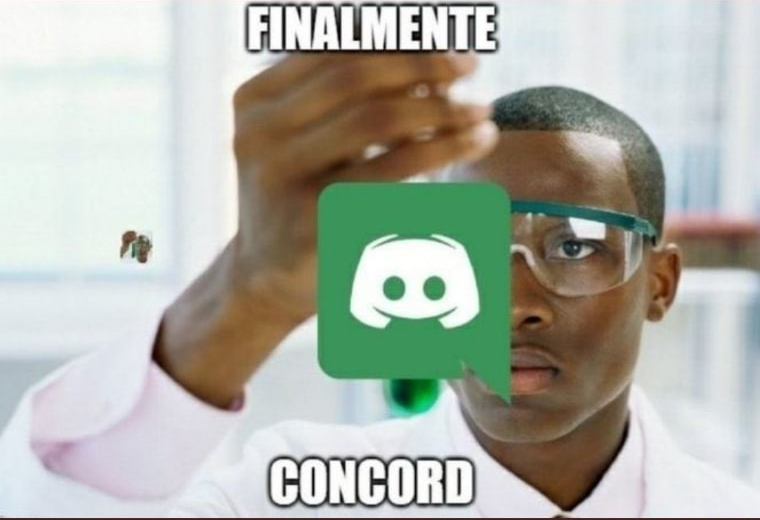

Múltiplos transmissores
Mais de uma pessoa pode compartilhar tela ao mesmo tempo na mesma sala. A degradação de banda fica isolada em quem assiste, sem cascata para os demais.

Experimental · P2P · sem intermediário
Concord é um app de áudio ao vivo e transmissão de tela, estilo Discord — mas peer-to-peer de verdade. Sua voz e sua tela vão direto para quem está na chamada, em malha (mesh), sem host retransmitindo mídia.
Três peças simples, cada uma fazendo só o que precisa fazer.
Um servidor leve troca SDP/ICE, gerencia salas e autorização. Ele nunca vê nem retransmite sua voz ou sua tela.
Cada participante se conecta diretamente aos outros via WebRTC. Áudio em mesh puro; tela sai direto do transmissor para cada espectador.
O host é só quem coordena a sala. Se ele cair, outro candidato assume em segundos — suas conexões de áudio e tela seguem intactas.
Mais de uma pessoa pode compartilhar tela ao mesmo tempo na mesma sala. A degradação de banda fica isolada em quem assiste, sem cascata para os demais.
Dono, admin, moderador e usuário — hierarquia clara por servidor inteiro, com ações como mutar, kick e timeout reservadas a quem tem autoridade.
Cada sala tem sua própria sessão mesh e eleição de host, isoladas das demais salas do mesmo servidor.
Autenticação via Google OAuth com PKCE, token guardado no cofre nativo do sistema operacional — sem senha própria para vazar.
Autorização de acesso sobrevive a reconexões e só é revogada pelo dono do servidor.
Cliente instalável em Electron — mesma base de Discord e WhatsApp Desktop — com captura de tela nativa do sistema.
Decisões técnicas reais do projeto — não promessa de marketing.
ws)Vamos rodar com testadores reais, em redes diferentes, para medir a taxa real de falha de conexão — sem achismo de mercado. Se quiser ser avisado quando abrir, deixe seu contato.